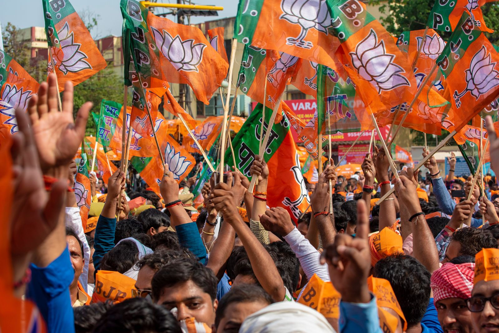
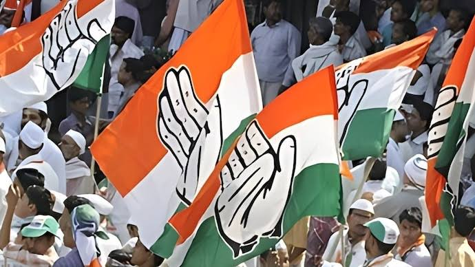
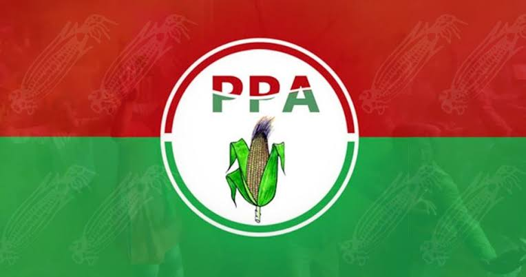
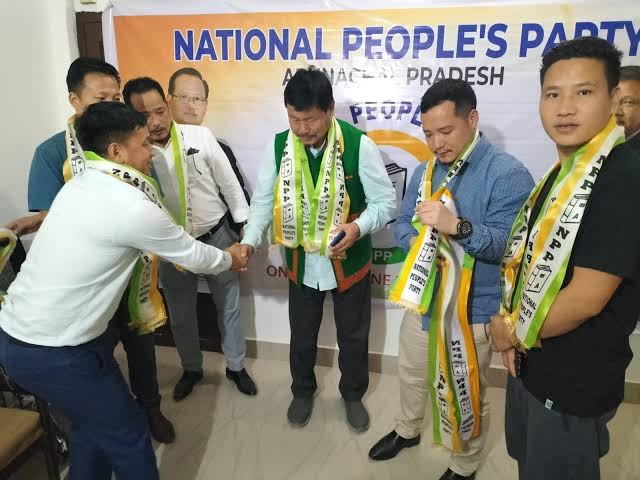
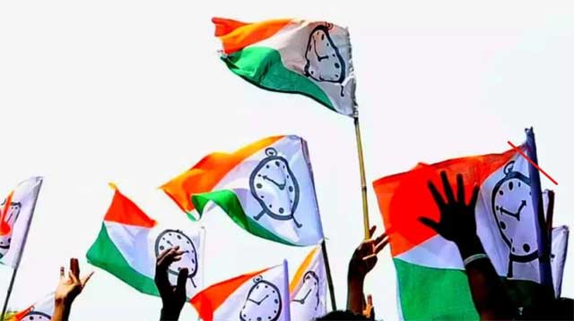
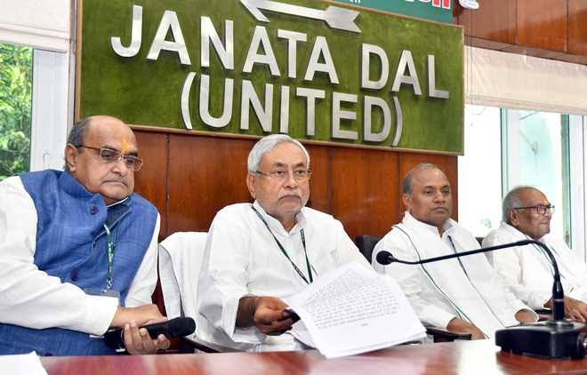

Political Parties in Arunachal Pradesh
Arunachal Pradesh has witnessed the presence and influence of both national and regional political parties. The major political players in the state include:
1. Bharatiya Janata Party (BJP):
The Bharatiya Janata Party (BJP) is one of the two major national political parties in India, known for its right-wing, nationalist ideology. Founded in 1980, the BJP is rooted in the political philosophy of Hindutva and is closely associated with the Rashtriya Swayamsevak Sangh (RSS).
|
|  |
 |
2. Indian National Congress (INC):
The Indian National Congress (INC) is one of India's oldest and most prominent political parties, established in 1885. Known for its center-left ideology, the INC played a pivotal role in India's struggle for independence and has been a major force in Indian politics post-independence. The party advocates for secularism, social justice, and inclusive economic development.
3. People's Party of Arunachal (PPA):
The People’s Party of Arunachal (PPA) is a regional political party in Arunachal Pradesh. Founded in 1977, the PPA emphasizes the unique cultural identity and local issues of the state's indigenous people. It is known for advocating regional autonomy and focusing on the specific needs and aspirations of the people of Arunachal Pradesh.
|
|  |
 |
4. National People's Party (NPP):
The National People's Party (NPP) is a regional political party primarily active in northeastern India, including Arunachal Pradesh. Founded in 2013 by P.A. Sangma, a veteran politician and former Speaker of the Lok Sabha, the NPP focuses on the rights and development of tribal communities and the broader issues affecting the northeastern region.
5. Nationalist Congress Party (NCP):
The Nationalist Congress Party (NCP) was founded on June 10, 1999, by Sharad Pawar, P.A. Sangma, and Tariq Anwar after they were expelled from the Indian National Congress for disputing the eligibility of Sonia Gandhi to lead the party due to her foreign origin. The NCP identifies itself as a party committed to democratic values, secularism, and the welfare of all sections of society.
|
|  |
 |
6. Janata Dal (United) (JDU):
The Janata Dal (United) or JD(U) is a center-left political party in India. It emerged from the Janata Dal, a major political force in the 1990s, following a split in 1999. The JD(U) was formally established in 2003 after merging with the Samata Party. The party is primarily based in Bihar and is led by Nitish Kumar.
|
Nature of Party Politics in Arunachal Pradesh
1. Dominated by regional parties: Arunachal Pradesh's political landscape is primarily influenced by regional parties that focus on local issues and concerns.
2. Influence of national parties: While regional parties hold sway, national parties like the Bharatiya Janata Party (BJP) also have a presence, especially in urban areas.
3. Coalition politics: Coalitions are common in Arunachal Pradesh due to the diversity of political parties and the need to form alliances to secure a majority in the state assembly.
4. Ethnic and tribal dynamics: Politics in Arunachal Pradesh often revolves around ethnic and tribal identities, with different parties catering to the interests of specific communities.
5. Role of independents: Independent candidates also play a role in Arunachal Pradesh politics, especially in areas where local issues and personalities outweigh party affiliations.
6. Electoral volatility: The political landscape in Arunachal Pradesh can be volatile, with frequent changes in alliances and power shifts during elections.
|